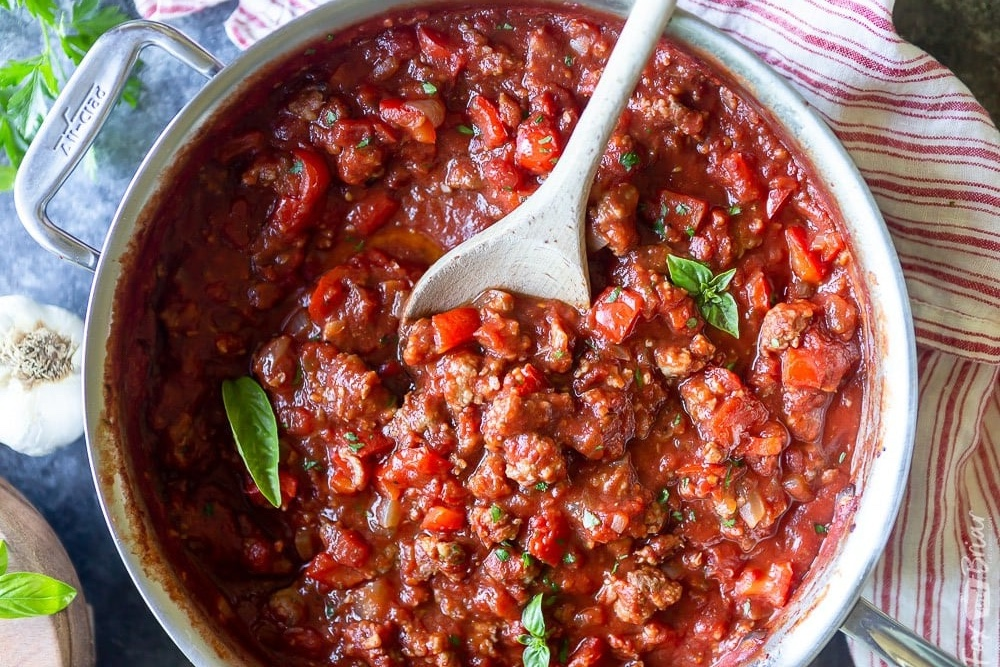

Sausage Marinara

Description
This is a version of sausage marinara with rice instead of pasta. I can't find the original recipe but it's ok, we make this all the time so i remember the steps pretty well. I am a recipe blogger. This makes enough for 2 people who eat a lot, but they save a bit for leftovers because they are trying to get better at portioning.
Ingredients
- 4 sausages. Some kind of Italian sausage is best
- 1 onion, or One-ion, chopped
- 2 bell peppers, whichever color you like, chopped
- 1 tin peeled plum tomatoes
- 1/4 to 1/2 jar tomato passata
- Lots of garlic, minced
- 2 Tbsp ground basil
- 1-ish Tbsp lemon juice
- Salt and pepper to taste
- 1 Tbsp Harissa paste (optional)
- 1 cup rice--Basmati is best (imo)
- Oil for frying (canola or sunflower)
Method
- Fry the sausages in a bit of oil until almost cooked through.
- Remove the sausage. Ask your partner to slice them up into bite-sized pieces while you do the next step
- Fry the garlic and onion until the onion is almost soft, then add the bell pepper.
- Also start to cook the rice. I always forget when is the best time to do this.
- When the pepper is soft, add the sausage back to the pan along with the tinned tomatoes and passata
- Add the lemon juice, basil, salt and pepper. Add the harrissa paste too, if using.
- Once everything's hot and flavorful and the sausage is cooked through, turn off the heat. Add the rice and stir to combine.
- Serve with garlic bread or something